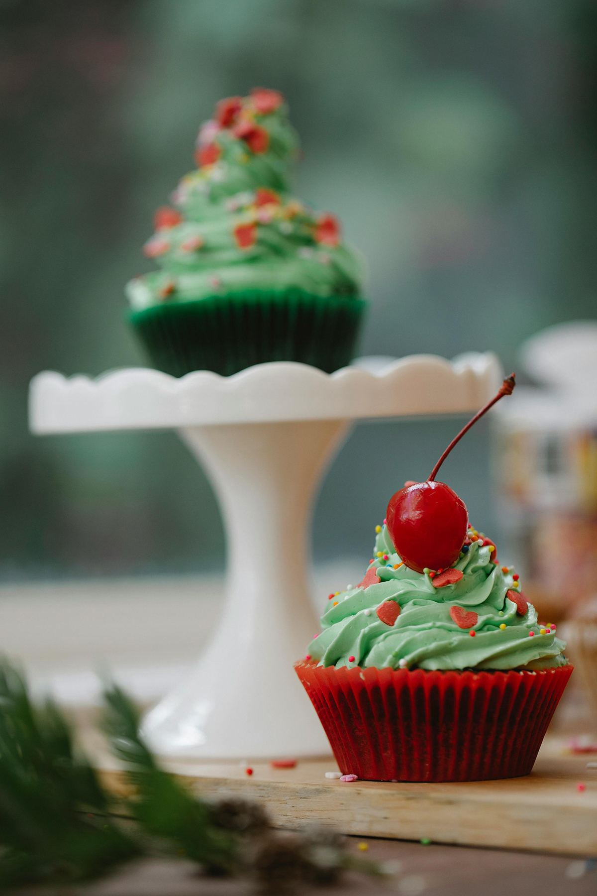

Plateau brunch

Un plateau brunch qui met le sourire dès le matin : donuts moelleux, fruits frais ultra colorés et petites douceurs qui donnent envie de tout picorer. Un mélange gourmand et vibrant, parfait pour partager (ou pas) et commencer la journée du bon côté..
Unicorn Cake

Un gâteau licorne qui fait briller les yeux : génoise moelleuse vanille, cœur fraise fondante, et déco arc-en-ciel qui met l’ambiance. Avec ses 30 cm de pure magie, il régale 12 à 16 gourmands prêts à galoper vers le pays des sucreries..
Petits biscuits

Des biscuits décorés tout mignons et ultra gourmands : une base sablée croustillante, recouverte d’un glaçage coloré et de détails dessinés à la main. De petites œuvres sucrées parfaites pour égayer une table, offrir… ou juste se faire plaisir sans aucune excuse..
Eclairs à la myrtille

Des éclairs déclinés en violet foncé et violet pastel, aussi beaux que délicieux : une pâte à choux légère garnie d’une crème onctueuse parfumée à la myrtille. Un duo de couleurs qui claque, parfait pour apporter une touche magique et un peu sauvage à votre buffet..
Le fraisier mystère

Un fraisier meringué revisité : génoise moelleuse, fraises fraîches et crème légère, avec une meringue fondante cachée à l’intérieur comme une petite surprise sucrée. Un dessert doux et réconfortant qui mêle fraîcheur, croquant et gourmandise dans chaque bouchée..
Rainbow cake

Un rainbow cake aussi flamboyant que gourmand ! Ici, fraise, mangue, citron, pomme verte, myrtille et cassis pour un voyage sucré du rouge au violet. Le tout est nappé d’une crème légère et décoré de macarons assortis.
Wedding cake

Un wedding cake à trois étages, élégant et romantique : génoises moelleuses garnies d’une crème légère à la vanille et de touches fruitées. Chaque étage est habillé d’un voile blanc immaculé et décoré de roses en pâte à sucre, délicatement façonnées à la main. Un gâteau raffiné, parfait pour sublimer un moment d’amour et de fête.
Cupcake Love

Des mini cupcakes tout doux pour la Saint-Valentin : une base moelleuse parfumée au chocolat, surmontée d’un tourbillon de crème délicate. Chaque bouchée est décorée d’un cœur doré qui brille juste ce qu’il faut. Une petite gourmandise pleine de charme, parfaite pour déclarer sa flamme… ou juste se régaler.
Gâteau d'anniversaire

Un gâteau d’anniversaire ultra gourmand : biscuit croquant et ganache pralinée qui fondent littéralement en bouche, le tout couronné d’un coulis de chocolat et d'une crème multicolore façon fête explosive. Un dessert aussi joyeux que décadent, parfait pour célébrer comme il se doit et régaler tous les invités.
Cupcakes de Noël
De petits trésors de Noël, aux épices douces et au chocolat chaud, surmontés d’un tourbillon de crème blanche comme la neige. Des éclats de sucre rouge et vert scintillent sur le dessus, comme des étoiles dans la nuit. Chaque bouchée est un petit conte de fêtes, parfait pour réchauffer le cœur et les papilles pendant l’hiver.
Bluecake enchanté

Un gâteau tout doux comme un nuage d’azur, délicatement parfumé aux cerises. Sa texture moelleuse fond sur la langue, tandis qu’un léger glaçage bleu s’étire en volutes délicates. Chaque bouchée évoque une douceur céleste, idéale pour un moment de rêve sucré… ou juste pour se laisser emporter par la magie des saveurs.
Les viennoiseries

Des croissants dorés et feuilletés, des pains au chocolat fondants, sortis tout droit du four. Leur parfum chaud emplit la cuisine, tandis que chaque bouchée croustille avant de fondre en une douceur beurrée irrésistible. Un plaisir matinal simple et élégant, qui transforme le petit-déjeuner en un vrai moment de bonheur gourmand.